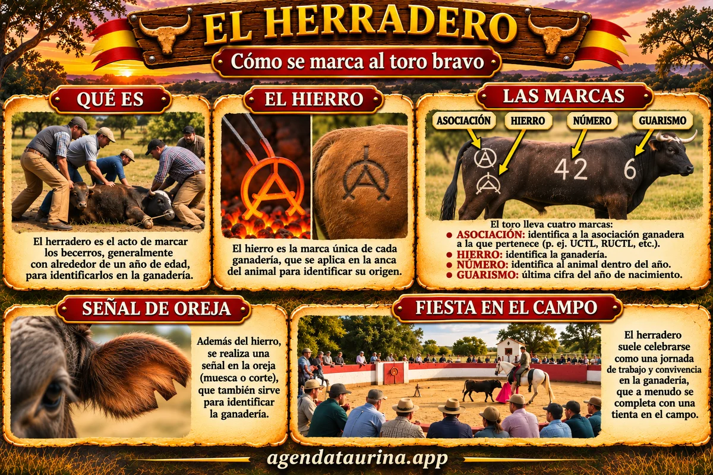

Agenda Taurina
Agenda TaurinaEl herradero: cómo se marcan los toros bravos con el hierro, el número y el guarismo
De dónde salen los datos que aparecen en los carteles de cada toro y por qué el herradero es uno de los días más importantes del campo bravo

Ilustración de Agenda Taurina generada con IA.
Cuando un cartel anuncia a «Malacara, Nº 8, guarismo 1, ganadería LOS ESPARTALES», esos datos no son inventados: el toro los lleva marcados en la piel desde que era un becerro. Se los pusieron en el herradero, una de las faenas más antiguas e importantes de la ganadería brava. En esta guía te contamos qué es, cómo se hace y qué significa cada marca.
Qué es el herradero
El herradero es la jornada en la que una ganadería marca a sus becerros con el hierro de la casa y con las cifras que los identifican para siempre. Se hace con un hierro calentado al rojo, que deja en la piel una marca permanente.
Gracias al herradero, cada animal queda identificado de por vida: se sabe a qué ganadería pertenece, qué número tiene dentro de ella y en qué año nació. Esos datos quedan además registrados en el libro genealógico de la ganadería.
Cuándo se hace
Se marca a los becerros cuando tienen en torno al año de vida, normalmente después de separarlos de sus madres (el destete). Cada ganadería elige el momento según su manejo, pero suele hacerse una vez al año, con toda la camada nacida en la misma temporada.
Cómo se hace
- Se apartan los becerros y se pasan, de uno en uno, a un corral o a la placita de la finca.
- Se sujeta al animal entre varios vaqueros, con cuidado de que no se lesione.
- Se aplican los hierros calentados en una hoguera: el de la ganadería, el de la asociación y las cifras.
- Se hace la señal en la oreja y se anotan todos los datos del becerro.
- Se suelta y vuelve con el resto de la camada.
Es un trabajo rápido, hecho por gente con mucha experiencia, porque cuanto menos dure, menos sufre el animal.
Las marcas, una a una
El hierro
Es el símbolo propio de cada ganadería: una combinación de letras, figuras o trazos que la identifica y que está registrada oficialmente. Se marca en el anca, la parte alta de la pata trasera. Muchos aficionados reconocen la procedencia de un toro solo con ver su hierro.
La marca de la asociación
Cada ganadería pertenece a una asociación de criadores, y sus toros llevan también la marca de esa asociación, herrada en la parte trasera, encima o debajo del hierro de la ganadería. Así se sabe en qué libro genealógico está inscrito el animal. Las principales son la Unión de Criadores de Toros de Lidia (UCTL), la Asociación de Ganaderías de Lidia (AGL), la Agrupación Española de Ganaderos de Reses Bravas (AEGRB) y Ganaderos de Lidia Unidos (GLU).
El número
Es el número de identificación del animal dentro de su ganadería. Se marca en el costado y es el que aparece en los carteles junto al nombre: «Nº 8», «Nº 57»… Dos toros de ganaderías distintas pueden tener el mismo número, pero dentro de la misma camada no se repite.
El guarismo
Es la última cifra del año de nacimiento del toro, y se marca en la paletilla, la parte alta de la pata delantera. Un guarismo 3 indica que el toro nació en un año acabado en 3. Sirve para conocer su edad de un vistazo y es uno de los datos más fiables de su reseña.
La señal de oreja
Además de las marcas a fuego, cada ganadería tiene su propia señal en las orejas: un corte con una forma concreta, como una muesca, un despuntado o un hendido. Es otra forma tradicional de saber de qué casa es un animal. Hoy, además, todas las reses llevan los crotales oficiales de identificación en las orejas.
Una fiesta en el campo
Más allá del trabajo, el herradero ha sido siempre un día especial en las ganaderías. Acuden familiares, amigos, vaqueros de otras fincas y aficionados, y la jornada suele terminar con una comida en el campo. Es el primer contacto de cada camada con el hombre y, para el ganadero, el momento de ver por primera vez de cerca a los toros que correrán años después.
Cómo te ayuda a leer los carteles
Con lo que has leído, ya puedes entender de dónde viene cada dato de un toro cerril:
- El nombre lo pone la ganadería, y no va marcado en la piel.
- El número lo lleva herrado en el costado.
- El guarismo lo lleva herrado en la paletilla y te dice su edad.
- La ganadería se reconoce por el hierro del anca.
- La marca de la asociación, junto al hierro, te dice en qué agrupación de criadores está inscrita la ganadería.
Si quieres completar la reseña, mira nuestras guías de capas o pelajes y de particularidades, y la de qué es un toro cerril.
Guía elaborada por Agenda Taurina sobre las prácticas habituales en la ganadería de lidia.
Ver el calendario completo Ver todas las noticias